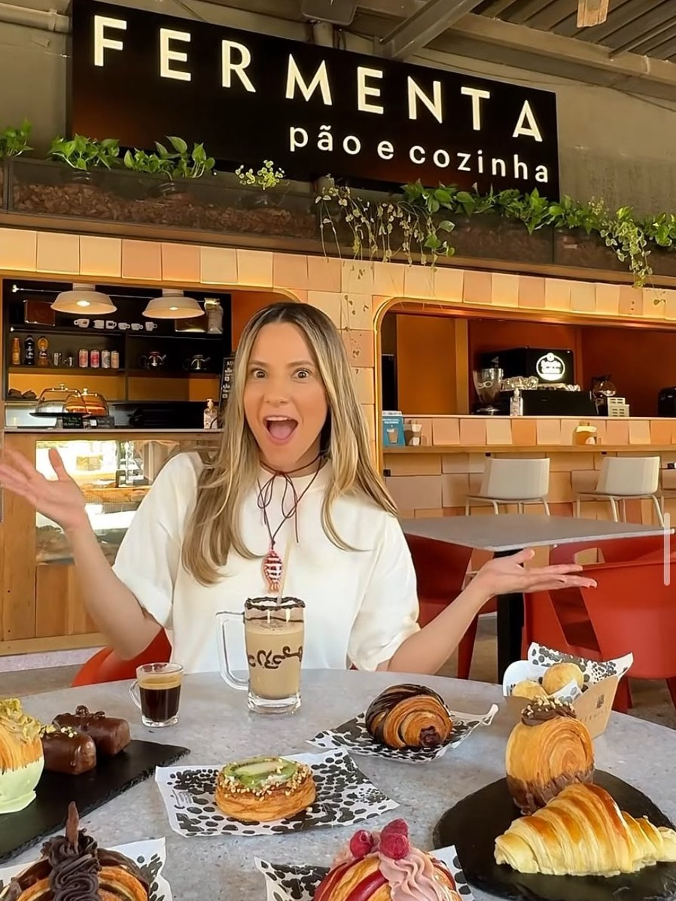
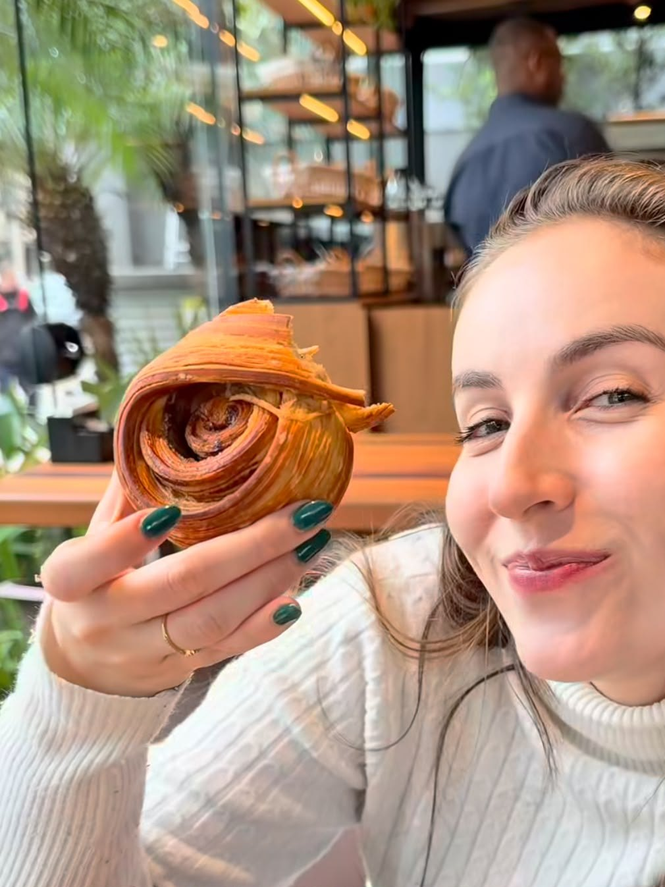

Antes de abrir a porta, a massa já está trabalhando.
No DC Navegantes, o dia começa no balcão.
Pão de fermentação natural, croissant, café especial, o Smash e o Guisadin. É da cozinha do DC que a massa sai para as outras casas.
- R. Frederico Mentz, 1561
- Party Coffee · qui e sex, 17h às 19h


Farinha, água, manteiga e tempo.
- Farinha tipo 55a base da massa
- Manteiga friauma camada inteira, dobrada dentro
- 3 dobras = 0 camadasa conta da massa folhada
- 0 °Cno forno, até dourar fundo
Receita clássica de referência, não a da Fermenta. A receita da casa: [A CONFIRMAR]
Na 24 de Outubro, o dia começa na vitrine.
Padaria, café e restaurante. Pães, croissants, folhados e cafés especiais, com o croissant inteiro de novo ao lado de um espresso.
- Almoço · 11h30 às 14h30, seg. a sáb.
- R. 24 de Outubro, 1513
Ao meio-dia, temos almoço.
Saladas, orgânicos e cozinha de território.
Pratos ilustrativos, gerados por IANinguém aqui tem pressa. Nem quem chega para trabalhar.
Café da tarde, mesa para abrir o computador e uma pausa com o que acabou de sair do forno.
Para evento, a gente não muda a receita. Muda a quantidade.
A mesma massa das três casas, dobrada na mesma conta, para a reunião da empresa, o coffee break ou a festa.
Do forno para a praça.
A Fermenta abre a terceira casa no chalé da Praça Otávio Rocha, no Centro Histórico. Abre no fim de novembro [A CONFIRMAR o dia].
- DC NavegantesA cozinha · desde out. de 2025
- 24 de OutubroPadaria, café e restaurante · desde set. de 2026
- Praça Otávio RochaO chalé · fim de nov. de 2026
Três casas. Escolha pelo horário, não pelo mapa.
Mas, se precisar do mapa, ele está aqui.
Antes de abrir a porta, a massa já está trabalhando.
Ao meio-dia, temos almoço.
Buffet premium das 11h30 às 14h30, de segunda a sábado. Saladas, orgânicos e cozinha de território. Pratos ilustrativos, gerados por IA.